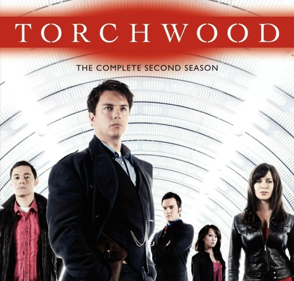

← Каталог портала

1. Чмок-Чмок, Пиф-Паф (Kiss Kiss, Bang Bang)
2. Спящая (Sleeper)
3. До последнего человека (To the Last Man)
4. Мясо (Meat)
5. Адам (Adam)
6. Перезагрузка (Reset)
7. Ходячий мертвец (Dead Man Walking)
8. День во смерти (A Day in the Death)
9. Кое-что взаймы (Something Borrowed)
10. Из дождя (From out of the Rain)
11. По течению (Adrift)
12. Фрагменты (Fragments)
13. Сквозные ранения (Exit Wounds)
👽Торчвуд - 1 сезон (2006-2007) ||| 👽Торчвуд - 2 сезон (2008)
👽Торчвуд - 3 сезон (2009) Дети Земли ||| 👽Торчвуд - 4 сезон (2011) День Чуда